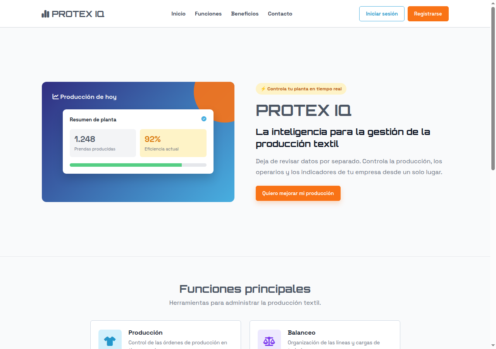
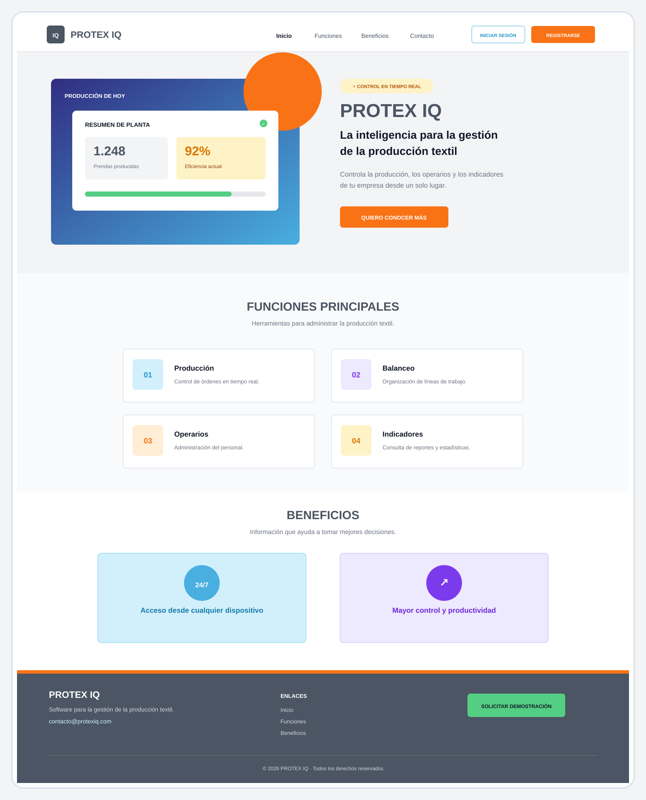
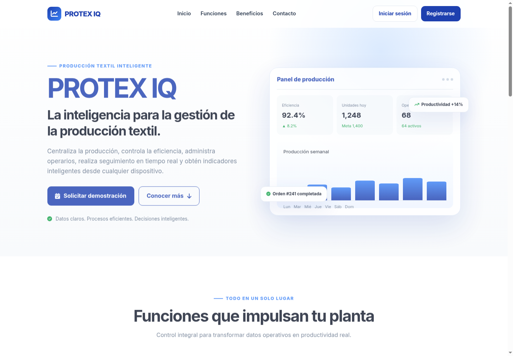

Control de producción
Registra órdenes, cantidades y avances de producción en tiempo real.
Ver producciónProducción textil inteligente
Centraliza tu producción, controla la eficiencia y toma mejores decisiones desde un solo lugar.
Conocer serviciosHerramientas para mejorar el control y la productividad de las empresas textiles.

Registra órdenes, cantidades y avances de producción en tiempo real.
Ver producción
Organiza las operaciones y distribuye las cargas de trabajo de cada línea.
Ver balanceo
Consulta eficiencia, unidades producidas y resultados para tomar decisiones.
Ver indicadores